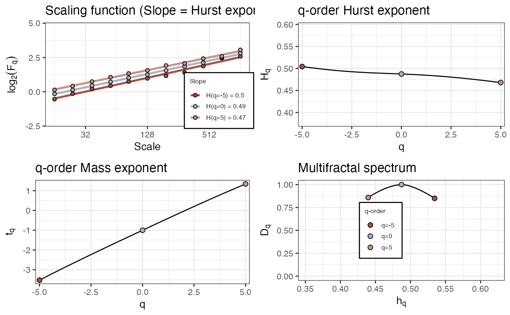

Multi-fractal Detrended Fluctuation Analysis
fd_mfdfa( y, qq = c(-10, -5:5, 10), fs = NULL, removeTrend = c("no", "poly", "adaptive", "bridge")[2], polyOrder = 1, standardise = c("none", "mean.sd", "median.mad")[2], adjustSumOrder = FALSE, scaleMin = 2, scaleMax = floor(log2(NROW(y)/2)), scaleResolution = (scaleMax - scaleMin), m = 1 )
| y | An input signal. |
|---|---|
A vector containing a range of values for the order of fluctuation |
|
| fs | Sample rate |
| removeTrend | Method to use for detrending, see |
| polyOrder | Order of polynomial trend to remove if |
| standardise | Standardise by the series using |
| adjustSumOrder | Adjust the time series (summation or differencing), based on the global scaling exponent, see e.g. https://www.frontiersin.org/files/Articles/23948/fphys-03-00141-r2/image_m/fphys-03-00141-t001.jpgIhlen (2012) (default = |
| scaleMin | Minimium scale (as a power of 2) to use |
| scaleMax | Maximum scale (as a power of 2) to use |
| scaleResolution | The scales at which detrended fluctuation will be evaluated are calculatd as: |
| m | m |
A dataframe with values of q,H(q), t(q), h(q), `D(q)``
set.seed(33) df <- fd_mfdfa(rnorm(4096)) op <- par(mfrow=c(2,2)) plot(df$q, df$Hq, type="l") plot(df$q, df$tq, type="l") plot(df$q, df$Dq, type="l") plot(df$hq,df$Dq, type="l")par(op)
{kind=link}